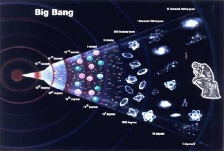

Translation: Frank Thomas Smith
This is the second of three lectures given in the Berlin branch of the Theosophical Society in 1904. Rudolf Steiner was the general secretary of the German Theosophical Society until he broke with the Theosophists in 1913 and formed the Anthroposophical Society. At that time Steiner used theosophical terminology derived from oriental sources. He later abandoned most of these terms in favor of German. This lecture was published in German by the Rudolf Steiner Verlag, Dornach, Switzerland, in 2001. It is based on notes taken by participants, none of whom was a professional stenographer. This is the only English translation to my knowledge. The first lecture may be found at Esoteric Cosmology - 1. The third lecture will appear in the next issue of SCR, and at Esoteric Cosmology - 3. . [Tr. – FTS]
After the introductory remarks last Thursday, I would like to begin by giving you a sketch of world development according to theosophical knowledge. I ask you to bear in mind that as there are only a few hours available, I can only give a sketch in which much can only be briefly indicated. There may be an opportunity later to elucidate further.
Before we pursue the history of the development of the universe and, above all, the formation of our planet Earth, we must make our own certain concepts that westerners no longer possess because they have occupied themselves for so long with only physical phenomena. In every book that deals with cosmology, we are told that we only need to look into space to see thousands and thousands of worlds unveil themselves before our eyes, worlds that are similar to our solar system, and that our Earth, the planet on which life has existed for millions of years, is like a particle of dust within these many worlds; and that man is merely a tiny being on this particle of dust. Natural science has considered this to be the case ever since the advent of the Copernican theory. Science tells us how erroneous it was that man in ancient times saw the Earth as the center of the universe and believed that cosmic evolution was only a preparation for human existence. Science has drummed into us how small the human being is compared to the universe, that is was arrogant of man to believe that the world is fashioned the way it is because of him. Schiller wrote the following beautiful words against this way of thinking:
To the Astronomers
Don't blab so much to me about dust clouds and suns!
Is nature so grand only because it lets you count?
Your subject is surely the most sublime in space;
But, friends, the sublime lives not in space.
And Goethe, about whom you know from other lectures that he possessed occult knowledge, expressed his thoughts about this point as follows:
“For what purpose would the world exist with its solar systems and stars if it didn't direct itself to the human being, so he could edify and be edified by it?”
So you see, people like these with their true spiritual world conception could not be satisfied with the idea of the insignificance of man and the dust particle nature of the universe.
Let us now consider the human being in relation to the history of evolution from the theosophical point of view. I must, however, anticipate this with some thoughts. Let's look for a moment at contemporary humanity's standpoint concerning cosmology. Everything that man can grasp with his senses — be they the rough senses of daily life or the more exact ones that natural science offers us by means of its microscopes and analytical methods — is ultimately merely the exterior, physical human being. Those of you who have heard theosophical lectures more often know that this exterior human being is only the wrapping, the outer manifestation of the inner man. What is the inner man actually? When you study the physical man anatomically, you find that he is composed of various systems: the skeletal and muscle system, the nervous system that has developed into the brain, and so forth. You also know that the brain is the organ of thinking. As Theosophists you also know that it isn't the brain that thinks, but that the brain is only an instrument, that the brain only serves the true being of man as a thinking instrument. This being who thinks in man cannot be discerned with physical sense instruments; not even someone who has opened his astral [soul — tr.] senses can see it. A highly developed clairvoyance is required in order to perceive what it is that thinks in a human being. In a theosophical sense we call that which thinks in man the true Self. This inner nucleus of being, this true Self, is spiritual in nature. It isn't something that extends in space, nor does it flow in time. It is timeless and spaceless, it exists beyond space and time, it is eternal. You have heard a description of this Self in my lectures about the Devachan [spiritual world-tr.], and you will find an exact description in my forthcoming book, Theosophy.
In order for the human being to live and think in the present stage of evolution, the spiritual Self needs a physical brain. We could perceive with this spiritual Self in the astral world and in the Devachan, or mental world, without a physical brain, but in the outer, physical world we can only perceive with the physical brain. If we wish to understand contemporary man correctly, we must say: The contemporary human being is a spiritual Self embodied in a physical brain. This physical brain had to first originate, it had to develop; it isn't eternal as is the spiritual Self. We can follow the spiritual Self back into infinitely remote times, and forward into the infinite future. From a certain point in time this spiritual Self clothed itself in a brain, created it, formed this brain to correspond to its own being. Such an organ cannot be formed just like that, however. It would be impossible for someone to simply create a viable brain through some process or other. It would be an artificial thing, but not a viable brain that could serve as an instrument for a spirit. In order for a brain to arise, other organs had to develop first. A brain can only develop in a physical body, such as the human one. Therefore it was necessary that the evolution of the rest of the physical body precede the brain instrument. When we look back on the preceding evolutionary stages we see how slow and gradual this process was. That the human being with his spiritual Self received such an organ with which he can come to understand the world, that is the goal and meaning of our present earthly development. Everything that has happened since millions of years had as its goal that evolution reach the point in which a brain can serve a spiritual Self.
Let us go back for a moment to the beginning of the earth's evolution. He whose spiritual vision has been sufficiently trained will have the following perception: At the beginning of our planetary evolution, our spiritual Self had reached a certain stage in its evolution. Every one of us was at a certain stage of evolution when the Earth was in its germinal stage. You can think back to the time when the earth's evolution began, and to all the spiritual Selfs that are incarnated today on Earth. You were all there, not as you are now, but at a completely different stage of evolution. During the Earth's evolution we have a distinct task; the human being must became something through this earthly evolution. Allow me to indicate in a descriptive way what the spiritual Self was when it entered into earthly evolution. Our spiritual Self had a completely different consciousness when it stood before the gates of our earthly existence than it does now. We can comprehend this if we imagine that we were dull dreamers who were not able to turn the images that flew by us into concepts, but could only see them as a panorama. Every individual spiritual Self had such a dream consciousness, and it had to pass through earthly evolution and must pass through future evolution in order to develop a bright, clear, conceptual picture-consciousness. The dream-like consciousness in which the spiritual Self was immersed at the start of earthly evolution is comparable to that of the animal's, but the consciousness level is not the same. The task our spiritual Self is to perform during the course of this planetary period is that consciousness brightens more and more — and when we complete this earthly evolution in the distant future, we will have brought this bright, clear consciousness to its zenith.
The beings who entered into earthly evolution at that time we call Pitris, which mean “Fathers”. We were those Pitris then; that was our nature during that earlier phase of evolution. Before we entered into earthly evolution, we passed through preliminary stages, and we worked ourselves up to the dream-like Pitri stage. That is where we stood when earthly evolution began. The Pitris had to gradually develop all the organs they needed in order to become acquainted with and understand their physical environment by means of a physical brain within the physical corporality we know today. The last thing man had to accomplish was to become a physical thinking being in order for his Self to be able to think within the physical world.
Now I come to the second preliminary thought. When you examine the human brain scientifically from all sides with the senses only, you will find that it is composed of the same matter and is ruled by the same energy as that of all other earthly physical systems. If you take a crystal, a piece of limestone or rock-salt, a plant, an animal, and you examine them chemically, you find that all physical nature, insofar as it is seen with the eye and touched by the hand, consists of the same chemical and physical energies — those that are active in the mineral, vegetable and animal kingdoms. Therefore, in order for the human being to reach his present stage of evolution, he had to clothe his spiritual Self with a physical body. That took a long time and the process is not yet complete. In the future the human being will develop further in this mineral wrapping. There are germinal organs in our bodies that are still to develop, new senses that are now only present in outline. So you see, the human being — his spiritual Self — needed a long time to clothe himself in the physical body which he now has.
Let us go back to the time when the human spiritual Self began the work of forging this mineral body, that can walk and stand, that possesses growth and reproductive faculties, a nervous system and the kind of brain a human needs. Go back to when all that was in a germinal stage, and then go forward to a time when the human being will have reached his highest point of evolution, when in the center of his head an organ will have developed through which he will have other perceptions than those we know today. In the segment of time between these two points flows the mineral evolution of man. In Theosophy we call such a time segment a “Round”. The Round I have just described to you — this evolutionary segment — we call the “Mineral Round”.
Before the human being could form this body in order to create the brain, however, he first had to prepare other parts of his being. The spiritual Self, this purely spiritual entity, could not have managed such a mineral body. Consider the spiritual Self as a point. And think of the point as being inside a mechanism such as our body; this point would never have been able to think by means of a physical brain.
So we have two things: we know that our spiritual Self had a dream-like consciousness in the beginning, but could never have managed the physical body. It had to create an intermediary in order to move its body. How do I move my hand? I first have the thought: I want to move my hand. If I only had the thought it would live in me, but it could never raise up a physical hand, just as a mere thought could never lift up a bottle, for example. If you want to move the bottle, energy must be added to the thought, which is the intermediary between the thought and my physical body. And we call this energy an astral [soul] energy. This is an energy present in the astral world. I would not be able to move my arm if there wasn't an astral energy in me that acts as intermediary between my thought and my physical arm. There must be an intermediary between my spiritual Self and my physical body and this intermediary is an astral essence. If I move my leg or my hand, if I put my brain into action in order to hatch thoughts — my physical body must be integrated with my thought through the astral organism.
You know from previous lectures that man has such an astral body that the clairvoyant sees in its astral cloud, which we call the aura, and in which his will and his desires live. When I have a thought, it alone is powerless to act. If it is accompanied by a wish, the will, it becomes an energy, a radiation, which is recognizable to the clairvoyant. The human being had to create an astral body, a desire-body, which could be the intermediary between his thoughts and his physical-mineral body, before he built up the physical body he now has. Before the evolutionary period, which I called the “Mineral Round”, another evolutionary period in which the astral body developed, had to precede it. We must therefore go back to the period in which the astral body was prepared. Only then could the physical-mineral body impregnate the astral body. This period, that also had a beginning and an end-point, we call the “Astral Round”.
As you can see, we have two “times”. One is that in which we now live: the mineral round. Another one preceded it: the astral round. But the human astral body also required preparation. A certain method is required to insert it into human nature. The astral body wasn't there when we were born and will not be there a short time after we die. It comes into being and it expires, it is subject to certain laws of origination and expiration. Consider a child. The child's astral body is correspondingly small; it grows according to the child's physical growth. Growth and reproduction are functions of the mineral-physical and the etheric [vital or life-tr.] essences of man. The human being must develop in earthly life according to the laws of growth and reproduction. That we are born and grow, that we survive at all, is not due to our astral bodies. Only wishes, wants and desires reside in the astral body. We are astral beings, just as animals are astral beings, and with the plants and animals we have that essence in common which is capable of bringing forth its own kind and making it grow from small to large. To use another expression: it is the form-giving element. Our physical and etheric bodies must have a very certain form when they are born, and this form must grow. You can conceive of this better if you take a seed ... [gap in the manuscript].
The forming energy is not an astral function. The astral can live within this energy, but it must be formed first itself. The human astral body could not have originated if another evolutionary period had not preceded it — the period in which the human form was prepared. Allow me to call this period the “Formation Period”; in Theosophy it is called the “Rupa-Round”. It is the period in which the form of man was prepared, so that his present form could develop.
All that we can observe in these three “rounds” are the wrappers for the spiritual Self of man. During the mineral round the human being “clothed” himself with the mineral wrapping. In the preceding period, the astral round, the human being prepared the astral wrapping, and during the period preceding that, the “rupa” or formation round, he acquired the ability to give himself the form he needed to perceive, think and act as a human being.
When we were still “Pitris”, when we still lived in a dream-like consciousness at the beginning of our earthly evolution, we were, if I may use the expression, result, fruit. In a way similar to a plant that grows from a seed planted in springtime in new earth, we had to prepare ourselves in order to evolve on the earth. We were the result of another world, and we had then to be the beginning of a completely new world, in which we had to first find ourselves. Just as you receive a seed in the autumn and let it rest over the winter, then plant it in new earth in the spring, so acted the Pitri-natures. They had to be replanted in a new environment, in the matter of the earthly world that was not present in the previous planetary stages. In order for this to happen another evolutionary period had to precede the one we just referred to. We now arrive at a very ancient evolutionary period.
The farther back we go from the present, the harder it becomes to imagine the conditions. The theosophist does not believe that he can go back to the beginning of the world with his questions. When people hear about Theosophy for the first time, they often ask: How did the world begin? Mostly such questions are not answerable, for we cannot go back to the very beginning of the world. You have seen the point in time where we have come from the Pitri-nature. The clairvoyant can follow this point in time by using certain methods. But the human being did not originate there; he was already at a certain phase of evolution. The theosophist does not speculate about this or indulge in abstract concepts. He follows up his experiences, his intuitions in the super-sensible region, and he describes his experiences insofar as he has them. In the same way as a geographical investigator would only describe what he has seen, say about Africa, and not what he has not seen, so the theosophical investigator would not describe the beginning of the world that lies very, very far back. The theosophist can only follow a part of our evolution through experience and does not indulge in speculation.
It was a seed that came from an earlier time into our evolution. Man was a formless seed. We call this point in time the “Arupa-Round”, the formless round. Thus we have three time segments before the one we are in now. We call these segments “Rounds”. The first, second and third rounds have gone by; we are now in the fourth round, and three more rounds will follow in the future, of which we have still to speak. We call the humans of the fourth round the humans of the mineral realm because they were formed by mineral energy; and we call a human of the previous round, the astral round, in which he formed his astral body, a human of the third elemental realm. We differentiate the humans of the third, second and first elemental realms. During the first elemental realm, or the first round, men's thoughts moved in a formless thought-matter. During the second elemental realm, or the second round, human thoughts moved in a formed thought-matter. And in the third elemental realm human thoughts could already form into wishes; they could take on the form that we can follow as astral energy in the astral world. Only in the fourth round is man advanced enough to dominate the mineral realm. Just as in the third round he formed an astral brain from astral matter, so in the fourth round he was advanced enough to form a physical brain with which he could think.
Thus we have three elemental realms and the mineral realm. The human being of the past lived in the three elemental realms. I can only hint at what followed, but you will understand the analogy. Another round, during which man will reach a still higher stage of evolution, will follow our present one. He will then not only think with his physical brain, but also with what we call astral energy. He will not only be able to command physical matter, he will also be able to dominate astral energy. I will give you an example for clarification. If I want to move this glass from here to there, I need a physical intermediary — my hand. Man has advanced far enough in the fourth round that he can consciously act in the physical, mineral world. He cannot yet, however, consciously handle astral energy. He has not yet developed an astral organ of will. He will be able to do so during the fifth round. In the fifth round the human being will be able to command the astral world as well as he now commands the physical world. He will be even more advanced during the sixth round. He will then be able to command the form-giving world, as he today commands the physical world, and in the fifth round will command the astral world. In the fifth round he will not only be able to realize a wish in the place where it is wished, but will also be able to send a wish to distant places. In the sixth round he will be able to form himself. After the sixth round our earthly evolution will have reached its culmination, and by then the human being will have taken unto himself all that he is able to learn on the Earth.
The human being has seven rounds to go through. I could only describe these rounds approximately — but we must be clear about this: During our mineral round man and the earth were not always physical, but had to evolve to that stage. They had to reach this stage in order to be physically perceptible. From our mineral round we look back on previous evolutionary stages. We can thereby conclude that there is a seven-stage evolution of our Earth and that the spiritual Self has seven stages or rounds to go through. During each of these seven rounds the spiritual Self was in one of the nature realms. Look at the human being. He has gone through the first, second, third elemental realms and finds himself now in the fourth round, which is our contemporary world.
Next time I will show that during this fourth round it is only man who has reached the mineral stage. Everything that is already mineral, non-living natural matter such as crystals, rocks, and so on, already reached the culmination of their evolution during the first round. Plants reached the culmination of their evolution during the second round, and today's animals reached their evolutionary culmination during the third round. Man has reached his physical-mineral evolution during the fourth round.
We see, therefore, that our Earth was preceded by another one millions of years ago. Man first appeared in the first elemental realm. The plant nature appeared during the second elemental realm. Then came the third elemental realm and animals were included in earthly evolution. The human being as such was, however, still an astral being, not yet able to descend to a physical incarnation. Only during the fourth round, when minerals, plants and animals already existed, was man able to descend to a physical incarnation. Therefore, in the four rounds we have four coexisting realms: the mineral realm in the first round, the plant realm in the second round, the animal realm in the third realm and the human realm in the fourth round. The human realm had sent out the three other preparatory realms in advance. Goethe was right when he said: “What would nature amount to if it weren't directed towards man?” The great cosmic event had to occur; the human being had to evolve through three realms in order to take on a mineral form during the fourth round. The human being was the co-creator in invisible form. As “Pitri” he came from another evolutionary stage. We worked with our dream-like consciousness during the first round. We worked in the preparation of our Earth in order that a realm could be formed that would be the foundation of our evolution.
That is the path of evolution up until now. We will continue next time.